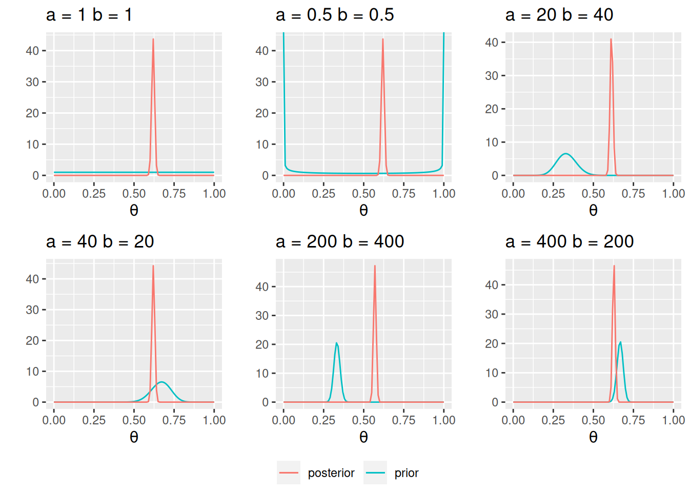

4 Beta-Bernoulli Model
4.1 Steps of Bayesian Data Analysis
Some authors described the process as “turning the Bayesian Crank,” as the same workflow applies to a variety of research scenarios.
Adapted from Gelman et al. (2020), I conceptualize Bayesian data analysis as the following steps:
-
Identify/Collect the data required to answer the research questions.
- As a general recommendation, it is helpful to visualize the data to get a sense of how they look, as well as to inspect for potential anomalies in the data collection.
- Choose an initial statistical model for the data in relation to the research questions. The model should have some theoretical justification and have parameters that are meaningful for the research questions. However, it is unlikely that any chosen model will capture everything important in the data, and this initial model will be modified and expanded in later steps.
- Specify prior distributions for the model parameters. Although this is a subjective endeavor, the priors chosen should be sensible to a skeptical audience.
- Check the prior distributions. It is recommended you conduct a prior predictive check, by simulating fake data based on the chosen model and prior distributions. This is especially important for complex models as the parameters are more difficult to interpret.
-
Obtain the posterior distributions for the model parameters. As described below and later in the course, this can be obtained by analytical or various mathematical approximations.
- For mathematical approximations, one should check the algorithms for convergence to make sure the results closely mimic the target posterior distributions.
- Conduct a posterior predictive check to examine the fit between the model and the data, i.e., whether the chosen model with the estimated parameters generates predictions that deviate from the data being analyzed on important features.
- It is unlikely that your initial model fully describes the major aspects of the data as pertaining to your research questions. Therefore, one should repeat steps 2 to 6 to specify and compare different models.
- If the fit between the model and the data is deemed satisfactory, one can proceed to interpret the results in the context of the research questions. It is also important to visualize the results in ways that are meaningful for the analysis.
4.2 Beta-Bernoulli Example
We will be using a built-in data set in R about patients diagnosed with AIDS in Australia before July 1, 1991. Here is a description of the variables (from the R documentation):

-
state: Grouped state of origin: “NSW”includes ACT and “other” is WA, SA, NT, and TAS. -
sex: Sex of patient. -
diag:(Julian) date of diagnosis. -
death: (Julian) date of death or end of observation. -
status: “A” (alive) or “D” (dead) at end of observation. -
T.categ: Reported transmission category. -
age: Age (years) at diagnosis.
You should always first plot your data and get some summary statistics:
pairs.panels(Aids2, ellipses = FALSE)
We will be using the status variable. Our simple research question is:
What was the death rate of AIDS in Australia when the data were collected?
4.2.1 Bernoulli Model
If we assume that the outcomes of the observations are exchangeable, meaning that the observations can be reordered in any way and still give the same inference, then one can choose a model: \[ y_i \sim \text{Bern}(\theta) \text{ for }i = 1, 2, \ldots, N \]
- \(y_i\) = status of observation \(i\) (0 = “A”, 1 = “D”)
- \(N\) = number of patients in the data set
- \(\theta\) = probability of “D”1
The model states that: the sample data \(y\) follows a Bernoulli distribution with \(n\) with a parameter \(\theta\)
When the data consist of binary observations, the variable is called a Bernoulli variable. It is conventional to denote one outcome as success and code it as 1, and the other as failure and code it as 0 (poor terminology, maybe, but that’s by convention). Therefore, in the AIDS example, each observation is considered a “Bernoulli” outcome (Alive vs. Dead).
4.2.2 Exchangeability
To illustrate exchangeability in an example, say we take 6 rows in our data set:
Now, when we reorder the column status to something like:
If the results are expected to be the same, then we say that the observations are assumed exchangeable. It happens when we assume that all observations have one common mean. However, if we think that there is a mean for females and a different mean for males, we cannot reorder the outcome randomly because they are no longer exchangeable (i.e., you cannot exchange a female score for a male score and expect to get the same results).
Exchangeability
A set of observations is said to be exchangeable if their joint probability distribution stays the same under all permutations. Roughly speaking, it means that the observations can be reordered and still provide the same inferences.
4.2.3 Check the Support
It is important to identify the support of the parameter, \(\theta\). Because \(\theta\) is a probability, its support is \([0, 1]\), meaning it is continuous and can take any value from 0 to 1. For a continuous parameter, there are infinitely many possible values, and it is impossible to specify our beliefs for each value. So, more commonly, we choose a probability density function with the same support as the parameter to express our prior belief.
4.2.4 Conjugate Prior: Beta Distribution
A commonly used family of prior distributions for a Bernoulli/binomial model is the Beta distribution, which has two parameters. We can write the prior as \[P(\theta) \sim \text{Beta}(a, b)\]
\(a\) and \(b\) are the two hyperparameters. Here are a few examples:
You will notice that when \(a > b\), there is more density closer to the right region (i.e., larger \(\theta\)), and vice versa. Also, the variance decreases when \(a\) and \(b\) become larger.2
A nice interpretation of \(a\) and \(b\) in a Beta prior distribution is to consider
- \(a - 1\) = number of prior ‘successes’ (e.g., “D”)
- \(b - 1\) = number of prior ‘failures’ (e.g., “A”)
Therefore, with \(\text{Beta}(1, 1)\), one has seen 0 prior success and 0 failure, meaning that there is no prior information (i.e., noninformative). Therefore, it makes sense that all \(\theta\) values are equally likely. On the other hand, if one chooses \(\text{Beta}(10, 20)\), one has seen 9 prior successes and 19 prior failures, so one has quite a lot of prior information (indeed more than the data with only 10 observations), so this is a strong prior.
The smaller the variance of the prior distribution, the stronger one’s belief before looking at the data, the more prior information
So by manipulating the values of \(a\) and \(b\), which are sometimes called hyperparameters, you can control the shape of the prior distribution as well as its strength, so it is quite flexible. Another advantage of using a beta prior is that it is a conjugate prior of the Bernoulli model, which means that the posterior distribution \(P(\theta \mid y)\) is also a beta distribution, the same as the prior distribution, although with different parameter values.
Conjugate Prior
For a specific model, conjugate priors yield posterior distributions in the same distribution family as the priors
Conjugacy greatly simplifies the computational burden for Bayesian analyses, so conjugate priors are almost the only ones used in earlier literature. However, this limited the applications of Bayesian methods, as for many problems, no conjugate priors can provide a realistic representation of one’s belief. Modern Bayesian analysis instead relies on simulation-based methods to approximate the posterior distribution, which can accommodate almost any kind of prior distribution. Aside from a few examples in this note, mainly for pedagogical purposes, we will be using simulation-based methods in the coming weeks.
Proof of Conjugacy*
To derive the form of the posterior, first recognize that the Beta distribution has the form:
\[ \begin{aligned} P(\theta) & = \mathrm{B}^{-1}(a, b) \theta^{a - 1} (1 - \theta)^{b - 1} \\ & \propto \theta^{a - 1} (1 - \theta)^{b - 1} \end{aligned} \]
Where \(\mathrm{B}(\cdot)\) is the beta function which is not very important for the class. As the density function is a function of \(\theta\), it suffices to write only the terms that involve \(\theta\).
Similarly, \[ P(\mathbf{y} \mid \theta) \propto \theta^z (1 - \theta)^{N - z}. \]
Therefore,
\[ \begin{aligned} P(\theta \mid \mathbf{y}) & \propto P(y \mid \theta) P(\theta) \\ & \propto \theta^z (1 - \theta)^{N - z} \theta^{a - 1} (1 - \theta)^{b - 1} \\ & = \theta^{a + z - 1} (1 - \theta)^{b + N - z - 1}. \end{aligned} \]
If we let \(a^* = a + z\), \(b^* = b + N - z\), we can see that \(P(\theta \mid \mathbf{y})\) is in the same form as the prior with \(a\) and \(b\) replaced by \(a^*\) and \(b^*\). Therefore, the posterior is also a beta distribution. So the beta distribution is a conjugate prior for the Bernoulli model.
In this example, we will choose a weakly informative Beta(2, 2) prior, which represents a weak belief as below:
ggplot(data.frame(th = c(0, 1)), aes(x = th)) +
stat_function(fun = dbeta, args = list(shape1 = 2, shape2 = 2)) +
ylim(0, 3) +
labs(y = "", x = expression(theta), title = "Beta(2, 2)")
Don’t Be Stubborn
A good prior should give a non-zero probability/density for all possible values of a parameter
Otherwise, if the prior density for some parameter values is zero, the posterior density will be zero, regardless of how much the data support those parameter values
4.2.5 Data
count(Aids2, status)The likelihood function is highly concentrated. I ran into some numerical issues as the computation gave zero, so I plotted the log-likelihood instead.
loglik <- function(th, N = 1082 + 1761, z = 1761) {
z * log(th) + (N - z) * log(1 - th)
}
ggplot(data.frame(th = c(0.61, 0.63)), aes(x = th)) +
stat_function(fun = loglik, n = 501) +
labs(x = expression(theta), y = "Log-likelihood")
Note I only show a range of [0.610, 0.630] for the x-axis, which contains where the likelihood (thus also the log-likelihood) peaked.
4.2.6 Posterior
Based on the conjugacy, the posterior of \(\theta\) is Beta(1,807, 1,116). As we are using a conjugate prior, the posterior is also a Beta distribution: \[ P(\theta \mid y) \sim \text{Beta}(a + z, b + N - z), \] which is a distribution for \(a + z - 1\) successes and \(b + N - z\) failures. This makes perfect sense as our prior information has \(a - 1\) successes and \(b - 1\) failures, and from our data, we have \(y\) successes and \(n - y\) failures, so our updated belief is based on adding up those successes and failures.
4.2.7 Summarize the posterior
set.seed(2119)
num_draws <- 1000
sim_theta <- rbeta(num_draws, shape1 = 1807, shape2 = 1116)
c(`Bayes estimate` = mean(sim_theta),
`Posterior median` = median(sim_theta),
`Posterior SD` = sd(sim_theta),
`MAD` = mad(sim_theta),
`90% Credible interval (equal-tailed)` = quantile(sim_theta, probs = c(.1, .9)),
`90% HDI` = HDInterval::hdi(sim_theta, credMass = .9)) Bayes estimate
0.618209694
Posterior median
0.618382945
Posterior SD
0.008829290
MAD
0.009254166
90% Credible interval (equal-tailed).10%
0.606862338
90% Credible interval (equal-tailed).90%
0.628990588
90% HDI.lower
0.604051851
90% HDI.upper
0.632766654 4.2.8 Posterior Predictive Check
Now, we need to know whether the model fits the data well. We do not have much to check for a Bernoulli model if we only have the status variable. However, as there is information for other variables, we can use them to check the exchangeability assumption. For example, we can ask whether the data from different state categories are exchangeable. The death rate across the 4 state categories are
status
state A D
NSW 664 1116
Other 107 142
QLD 78 148
VIC 233 355 status
state A D
NSW 0.3730337 0.6269663
Other 0.4297189 0.5702811
QLD 0.3451327 0.6548673
VIC 0.3962585 0.6037415We can now generate predictions from our posterior distribution and model.
plist <- vector("list", 12L)
plist[[1]] <- ggplot(
Aids2,
aes(x = state, y = mean(status == "D"), fill = state)
) +
geom_bar(stat = "identity") +
guides(fill = "none") +
labs(x = "Observed data", y = "Number of Deaths") +
theme(axis.title.x = element_text(color = "red")) +
ylim(0, 1200)
for (i in 1:11) {
# Get the a value from posterior samples
theta_post <- rbeta(1, 1763, 1084)
# For each plausible theta value, generate a status variable
status_new <- sample(c("D", "A"), nrow(Aids2),
replace = TRUE,
prob = c(theta_post, 1 - theta_post)
)
df_new <- Aids2 |>
mutate(status = factor(status_new))
plist[[i + 1]] <- plist[[1]] %+% df_new +
labs(x = paste("Simulated data", i)) +
theme(axis.title.x = element_text(color = "black"))
}
gridExtra::grid.arrange(grobs = plist, nrow = 3)
So the observed data (the first subplot) look similar to the simulated data. We can also conduct a posterior predictive check by a test statistic for subgroups. Here, we will use the bayesplot package and look at fit across groups:
# Draw posterior samples of theta
post_sample <- rbeta(1e4, 1807, 1116)
# Initialize a S by N matrix to store the simulated data
y_tilde <- matrix(NA,
nrow = length(post_sample),
ncol = length(Aids2$status))
for (s in seq_along(post_sample)) {
theta_s <- post_sample[s]
status_new <- sample(c("D", "A"), nrow(Aids2),
replace = TRUE,
prob = c(theta_s, 1 - theta_s)
)
y_tilde[s,] <- as.numeric(status_new == "D")
}
bayesplot::ppc_stat_grouped(
as.numeric(Aids2$status == "D"),
yrep = y_tilde,
group = Aids2$state
)`stat_bin()` using `bins = 30`. Pick better value with `binwidth`.If the fit is good, the mean, indicated by the darker line, should be within the simulated distribution based on the model. So the model that assumes observations are exchangeable across states is not too off, although it seems fitting less well for Other states.
4.2.8.1 Another check on age
# Create an age group indicator
age50 <- factor(Aids2$age > 50, labels = c("<= 50", "> 50"))
# Draw posterior samples of theta
post_sample <- rbeta(1e4, 1807, 1116)
# Initialize a S by N matrix to store the simulated data
y_tilde <- matrix(NA,
nrow = length(post_sample),
ncol = length(Aids2$status))
for (s in seq_along(post_sample)) {
theta_s <- post_sample[s]
status_new <- sample(c("D", "A"), nrow(Aids2),
replace = TRUE,
prob = c(theta_s, 1 - theta_s)
)
y_tilde[s,] <- as.numeric(status_new == "D")
}
bayesplot::ppc_stat_grouped(
as.numeric(Aids2$status == "D"),
yrep = y_tilde,
group = age50
)`stat_bin()` using `bins = 30`. Pick better value with `binwidth`.
As can be seen, the model seems off for those aged 50+.
4.2.9 Comparison to frequentist results
Using maximum likelihood, the estimated death rate would be \(\hat \theta = 1761 / 2843 = 0.62\), with a standard error (SE) of \(\sqrt{0.62 (1 - 0.62) / n} = 0.0091\), with a 90% confidence interval of \([0.6, 0.63]\), which is similar to the interval with Bayesian inference.
4.2.10 Sensitivity to different priors

You can see one needs (a) a very strong prior (equivalent to 600 data points) and (b) the prior and the data not agreeing to get a substantially different conclusion.
An additional thing to note for the Bernoulli/binomial model is that, instead of setting the prior on \(\theta\), sometimes we are more interested in setting the prior for a transformed parameter that has values between \(-\infty\) and \(\infty\), such as one on the logit scale (as related to logistic regression).↩︎
The \(\mathrm{Beta}(1 / 2, 1 / 2)\) distribution is called a Jeffreys prior (https://en.wikipedia.org/wiki/Jeffreys_prior), which is derived according to some statistical principles for different models. One big advantage of a Jeffreys prior is that it is invariant, meaning that the prior will stay the same even under reparameterization. However, like conjugate priors, Jeffreys prior limits the choice of prior even when true prior information is available.↩︎